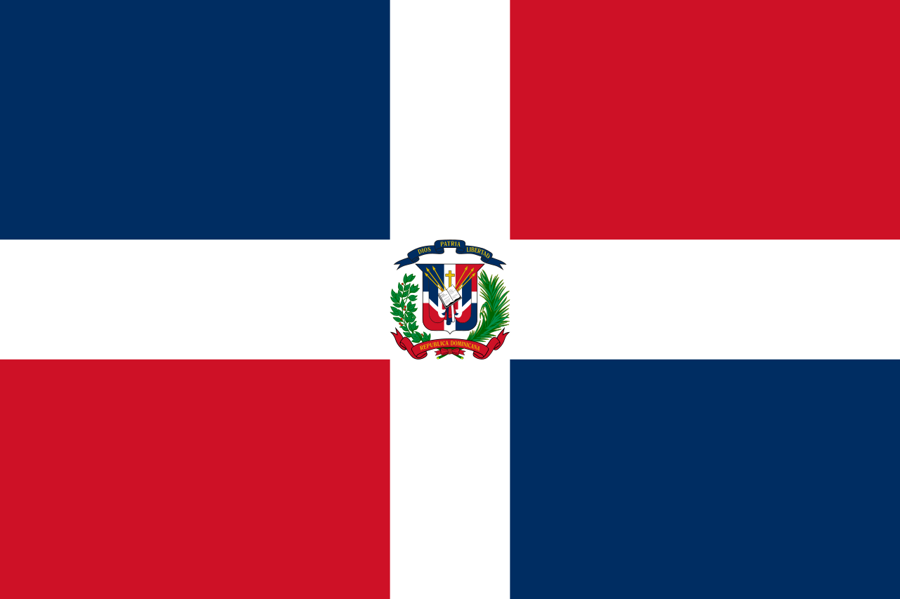

About Me
My name is Freisi, I was born and currently live
in Santo Domingo, Dominican Republic. I came from a big family
of ten siblings with wonderfull parents. I work as a cyber security analyst
and love learning new things and playing voleyball.
Like to travel once or twice per year.
Santo Domingo, Dominican Republic
The Dominican Republic is a Caribbean country that shares the island of Hispaniola with Haiti to the west. It is known for its beaches, resorts and golf areas. Its terrain includes tropical forests, savanna and highlands, including Pico Duarte, the highest mountain in the Caribbean. The capital Santo Domingo has Spanish-style elements, such as the Gothic-style Primate Cathedral of America, which is 5 centuries old, in its Colonial Zone district.
Web Dev Resources
- Udemy
- w3Schools
- Css Tricks